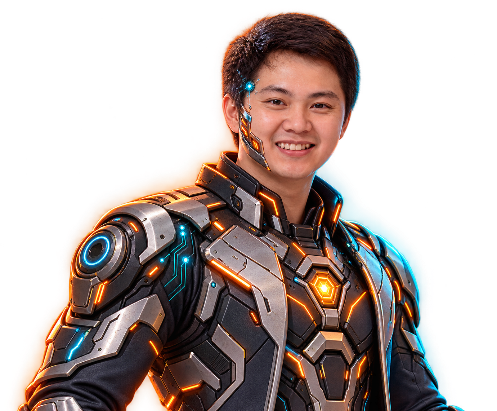

Network Infrastructure
Architecture, operations, monitoring and resilient connectivity for demanding enterprise environments.
LAN / WAN · Routing · SwitchingAI • VIBE CODING • UX/UI • INFRASTRUCTURE
AI-focused technology specialist combining generative AI, vibe coding and UX/UI with 17 years of infrastructure experience to build secure, scalable and human-centered solutions.

01 / EXPERTISE
Architecture, operations, monitoring and resilient connectivity for demanding enterprise environments.
LAN / WAN · Routing · SwitchingReliable systems administration, practical security controls and disciplined incident response.
Windows · Virtualization · SecurityProject planning, cross-team coordination and clear communication from requirement to delivery.
Projects · Vendors · TeamsDesigning user-centered interfaces and interactive prototypes in Figma, then turning ideas into working websites and tools through vibe coding and AI-assisted workflows.
UX/UI · Figma · Vibe Coding · AI02 / EXPERIENCE
Nanyang Textile Group
Hightech Weld
Nanyang Textile Group
Nanyang Textile Group
Nanyang Textile Group
03 / AI CAPABILITIES
A practical toolkit for creating, communicating and solving problems faster—combining real infrastructure experience with vibe coding and modern generative AI.
04 / EDUCATION
Academic foundations connecting business strategy, telecommunications and information technology.
King Mongkut’s University of Technology Thonburi
Telecommunication and Broadcasting ManagementDhurakij Pundit University
Business Information Technology05 / CERTIFICATIONS & REFERENCES
Futureskill · May 2024
Futureskill · May 2024
Futureskill · May 2024
Futureskill · Mar 2021
Futureskill · Mar 2021
Futureskill · Oct 2021
Futureskill · Sep 2021
Futureskill · Sep 2021
Futureskill · Oct 2021
Futureskill · Oct 2021
Linuxgray Training Center · Jan 2009
Linuxgray Training Center · Jan 2009
Linuxgray Training Center · Jan 2009
06 / CONTACT
Available for opportunities across network infrastructure, project coordination, UX/UI and AI-assisted digital production.